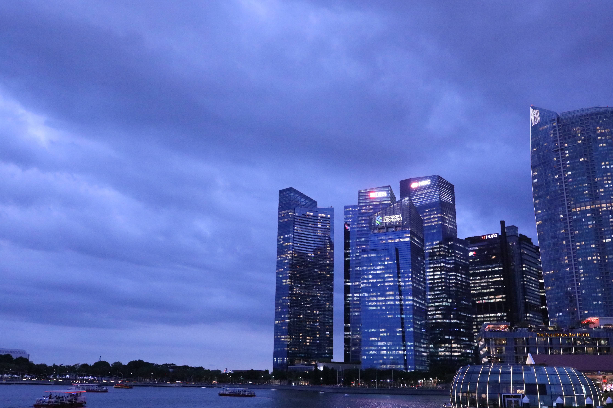
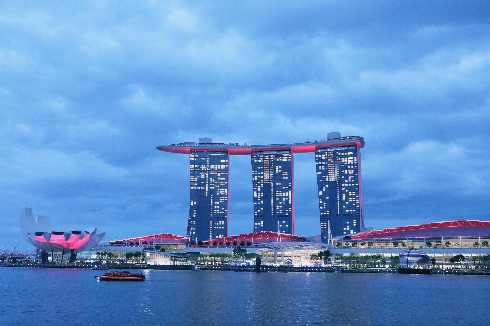
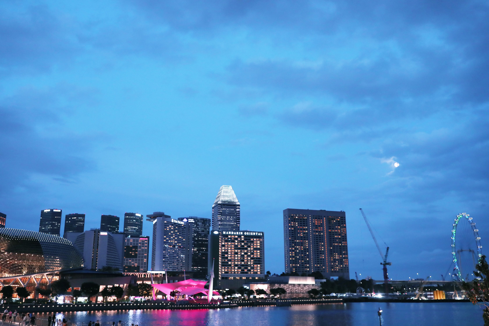
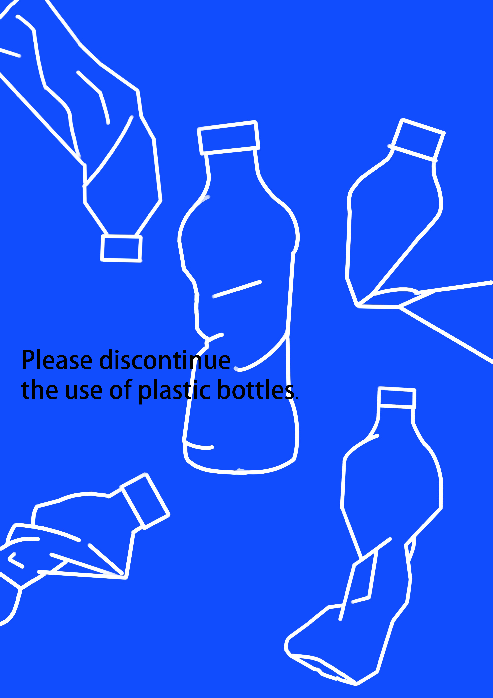
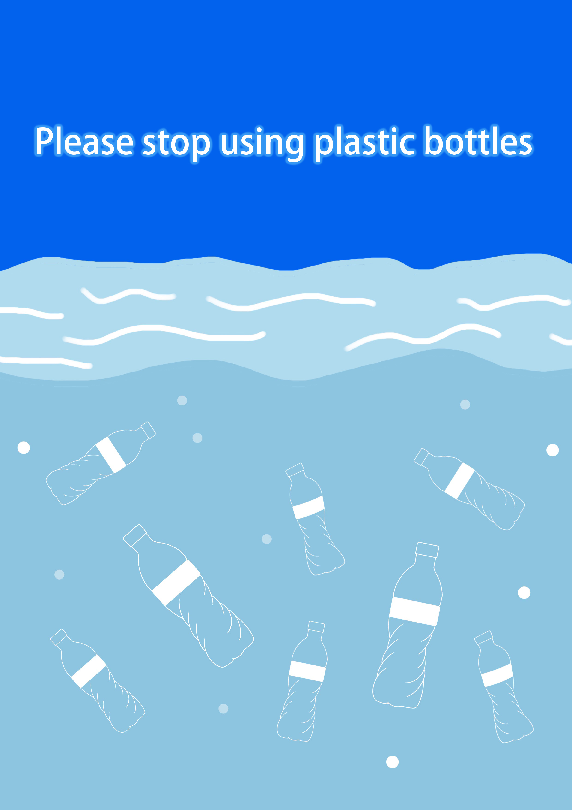
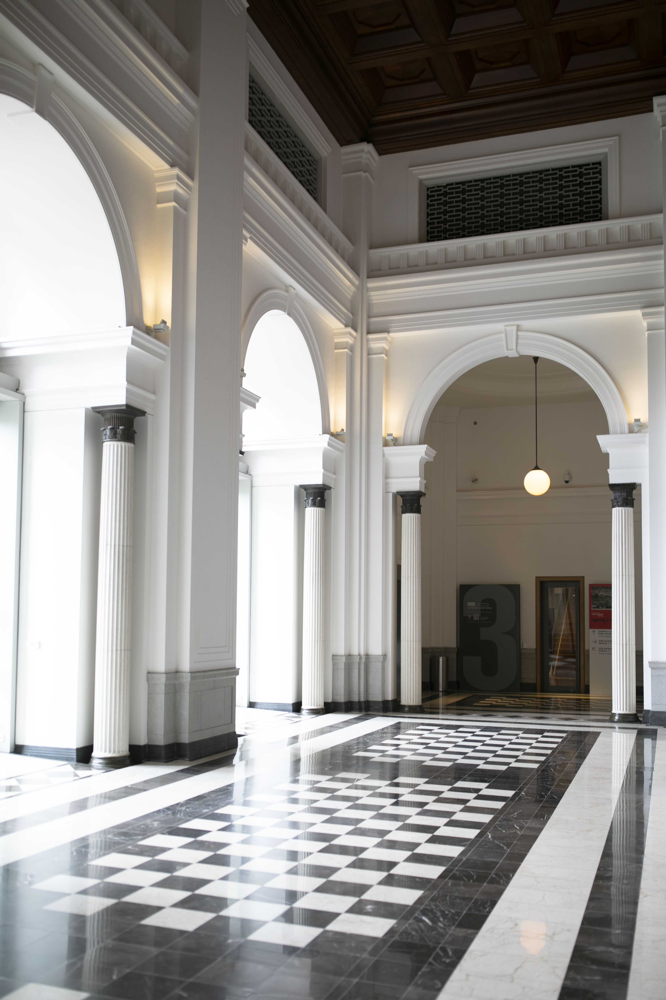
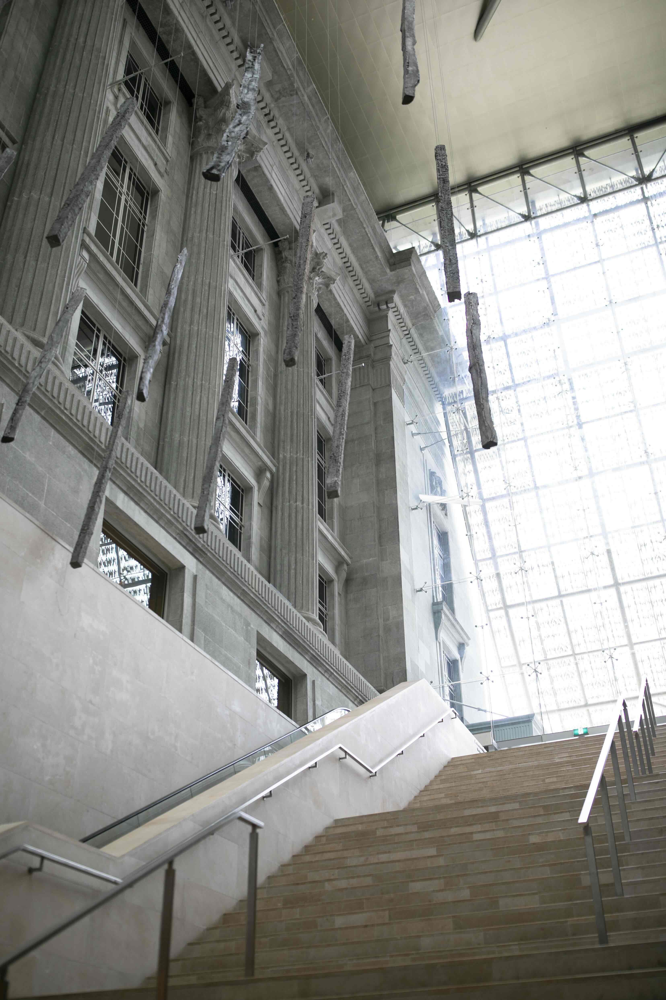
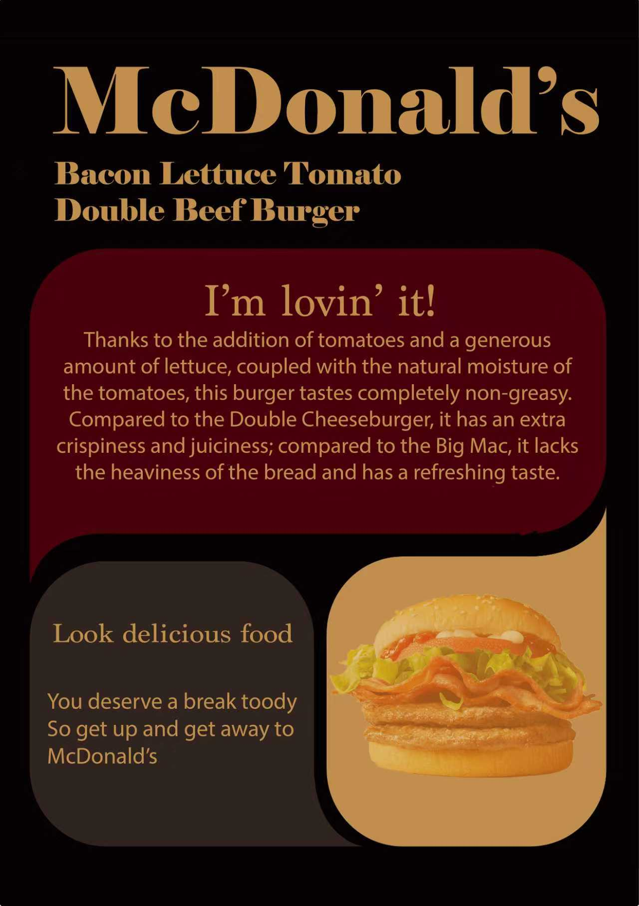
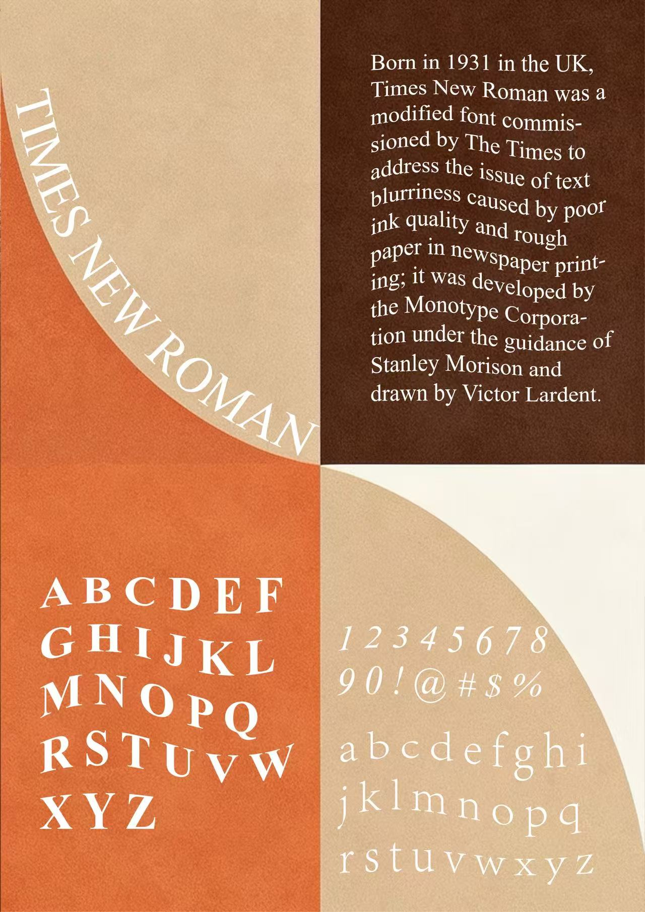
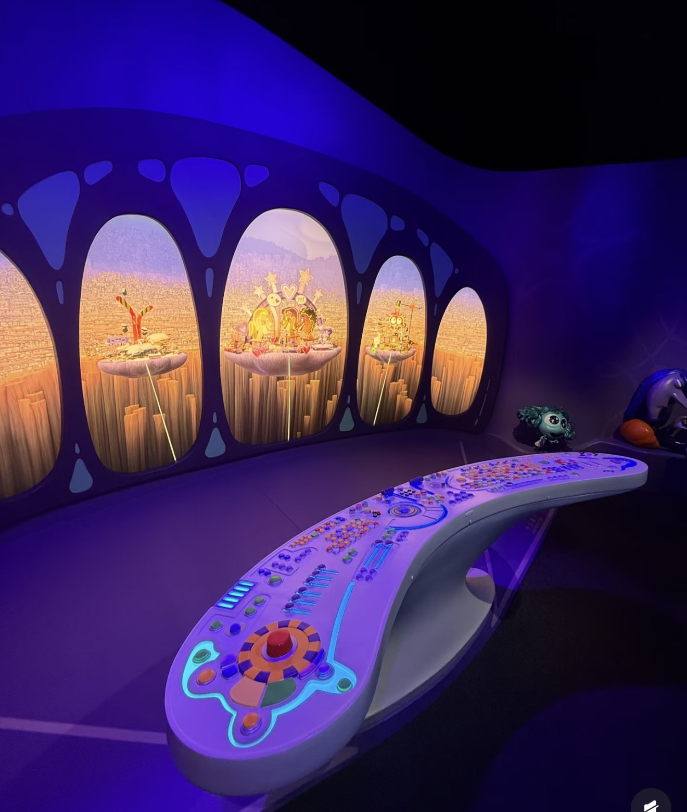

Blues photography
The blue hour
The ‘blue hour’ is the core natural source for blue tone photography. It refers to the brief 20–40 minute period just after sunset before the sky turns completely dark (or just before sunrise).
During this time, the sky takes on a deep, serene azure blue, while the artificial lights (warm tones) on the ground have just lit up, creating an excellent contrast between cool and warm tones.

bule hour'">Blue’ Emotions
Blue’ Emotions: In art and psychology, blue often symbolizes melancholy, solitude, tranquility, mystery, or reason.
Photographers use expansive areas of blue to convey a sense of ‘quiet narrative,’ making the photographs appear as thought-provoking as cinematic frames.

blue tone photography
For blue tone photography, while the ‘blue hour’ presents a prime natural opportunity, the style is achieved more through a combination of on-site capture and post-processing color grading.
Blue tone photography depends to a large extent on the handling of tones in post-production.

blue tone photography'">works show








